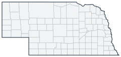

Historical county changes, 1790–1990 › Nebraska

| Name↕ | Unit↕ | Existed↕ | FIPS↕ |
|---|---|---|---|
| Adams County | county | 1870–1990 | 31001 |
| Antelope County | county | 1880–1990 | 31003 |
| Arthur County | county | 1890–1990 | 31005 |
| Banner County | county | 1890–1990 | 31007 |
| Blaine County | county | 1890–1990 | 31009 |
| Boone County | county | 1880–1990 | 31011 |
| Box Butte County | county | 1890–1990 | 31013 |
| Boyd County | county | 1890–1990 | 31015 |
| Brown County | county | 1890–1990 | 31017 |
| Buffalo County | county | 1860–1990 | 31019 |
| Burt County | county | 1860–1990 | 31021 |
| Butler County | county | 1860–1990 | 31023 |
| Cass County | county | 1860–1990 | 31025 |
| Cedar County | county | 1860–1990 | 31027 |
| Chase County | county | 1880–1990 | 31029 |
| Cherry County | county | 1890–1990 | 31031 |
| Cheyenne County | county | 1870–1990 | 31033 |
| Clay County | county | 1870–1990 | 31035 |
| Clay County (old) | county | 1860 | 31033.1 |
| Colfax County | county | 1870–1990 | 31037 |
| Cuming County | county | 1860–1990 | 31039 |
| Custer County | county | 1880–1990 | 31041 |
| Dakota County | county | 1860–1990 | 31043 |
| Dawes County | county | 1890–1990 | 31045 |
| Dawson County | county | 1860–1990 | 31047 |
| Deuel County | county | 1890–1990 | 31049 |
| Dixon County | county | 1860–1990 | 31051 |
| Dodge County | county | 1860–1990 | 31053 |
| Douglas County | county | 1860–1990 | 31055 |
| Dundy County | county | 1880–1990 | 31057 |
| Fillmore County | county | 1870–1990 | 31059 |
| Franklin County | county | 1870–1990 | 31061 |
| Frontier County | county | 1880–1990 | 31063 |
| Furnas County | county | 1880–1990 | 31065 |
| Gage County | county | 1860–1990 | 31067 |
| Garden County | county | 1910–1990 | 31069 |
| Garfield County | county | 1890–1990 | 31071 |
| Gosper County | county | 1880–1990 | 31073 |
| Grant County | county | 1890–1990 | 31075 |
| Grant County (old) | county | 1870 | 31073.1 |
| Greeley County | county | 1880–1990 | 31077 |
| Hall County | county | 1860–1990 | 31079 |
| Hamilton County | county | 1870–1990 | 31081 |
| Harlan County | county | 1880–1990 | 31083 |
| Harrison County | county | 1870 | 31083.1 |
| Hayes County | county | 1880–1990 | 31085 |
| Hitchcock County | county | 1880–1990 | 31087 |
| Holt County | county | 1880–1990 | 31089 |
| Hooker County | county | 1890–1990 | 31091 |
| Howard County | county | 1880–1990 | 31093 |
| Jackson County | county | 1870 | 31093.1 |
| Jefferson County | county | 1870–1990 | 31095 |
| Johnson County | county | 1860–1990 | 31097 |
| Jones County | county | 1860 | 31097.1 |
| Kearney County | county | 1860–1990 | 31099 |
| Keith County | county | 1880–1990 | 31101 |
| Keya Paha County | county | 1890–1990 | 31103 |
| Kimball County | county | 1890–1990 | 31105 |
| Knox County | county | 1860–1990 | 31107 |
| Lancaster County | county | 1860–1990 | 31109 |
| Lincoln County | county | 1870–1990 | 31111 |
| Logan County | county | 1890–1990 | 31113 |
| Loup County | county | 1890–1990 | 31115 |
| Lyon County | county | 1870 | 31115.1 |
| Madison County | county | 1870–1990 | 31119 |
| McPherson County | county | 1890–1990 | 31117 |
| Merrick County | county | 1860–1990 | 31121 |
| Monroe County | county | 1870 | 31121.1 |
| Morrill County | county | 1910–1990 | 31123 |
| Nance County | county | 1870–1990 | 31125 |
| Nemaha County | county | 1860–1990 | 31127 |
| Nuckolls County | county | 1870–1990 | 31129 |
| Nuckolls County (old) | county | 1860 | 31127.1 |
| Otoe County | county | 1860–1990 | 31131 |
| Pawnee County | county | 1860–1990 | 31133 |
| Perkins County | county | 1890–1990 | 31135 |
| Phelps County | county | 1880–1990 | 31137 |
| Pierce County | county | 1870–1990 | 31139 |
| Platte County | county | 1860–1990 | 31141 |
| Polk County | county | 1860–1990 | 31143 |
| Red Willow County | county | 1880–1990 | 31145 |
| Richardson County | county | 1860–1990 | 31147 |
| Rock County | county | 1890–1990 | 31149 |
| Saline County | county | 1860–1990 | 31151 |
| Sarpy County | county | 1860–1990 | 31153 |
| Saunders County | county | 1860–1990 | 31155 |
| Scotts Bluff County | county | 1890–1990 | 31157 |
| Seward County | county | 1860–1990 | 31159 |
| Sheridan County | county | 1890–1990 | 31161 |
| Sherman County | county | 1880–1990 | 31163 |
| Shorter County | county | 1860 | 31163.1 |
| Sioux County | county | 1880–1990 | 31165 |
| Stanton County | county | 1870–1990 | 31167 |
| Taylor County | county | 1870 | 31167.1 |
| Thayer County | county | 1880–1990 | 31169 |
| Thomas County | county | 1890–1990 | 31171 |
| Thurston County | county | 1870–1990 | 31173 |
| Valley County | county | 1880–1990 | 31175 |
| Washington County | county | 1860–1990 | 31177 |
| Wayne County | county | 1870–1990 | 31179 |
| Webster County | county | 1870–1990 | 31181 |
| Wheeler County | county | 1880–1990 | 31183 |
| Winnebago Ind. Res. County | county | 1870 | 31183.1 |
| York County | county | 1870–1990 | 31185 |
Note: Decimals in FIPS codes come from Forstall, who gives every county a code, including counties that no longer exist. A county abolished between 1930 and 1990 keeps the code it had. However, a county which was abolished prior to 1930 never received a code. Such a county is given the code of the county which precedes it alphabetically plus a decimal to hold its place in the list.
Source: Richard L. Forstall (1996), Population of States and Counties of the United States: 1790 to 1990, U.S. Bureau of the Census (public domain). Always check a row against the scan it links to.